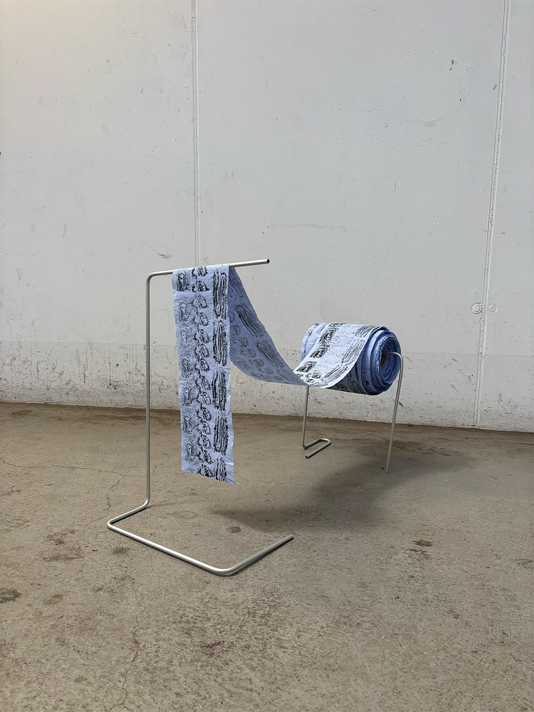
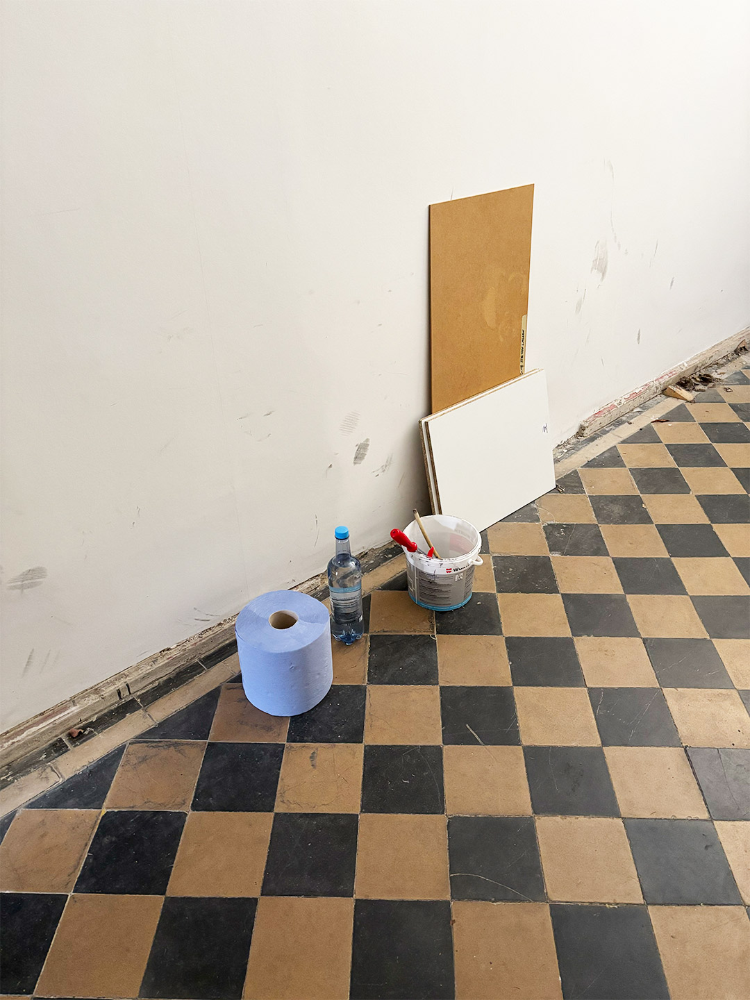
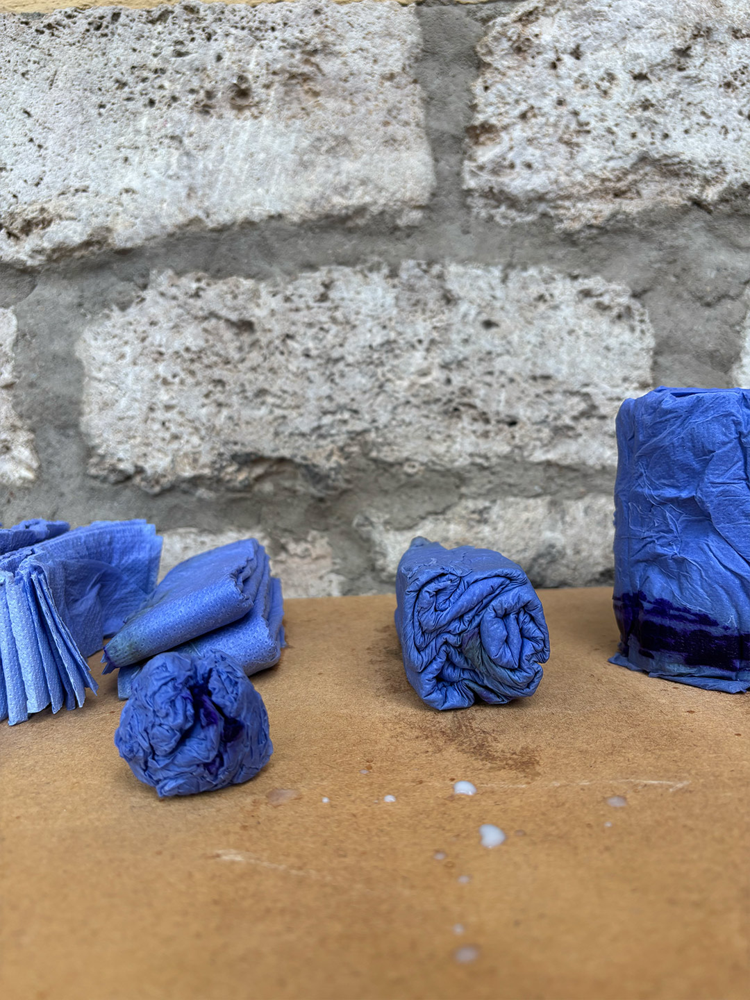
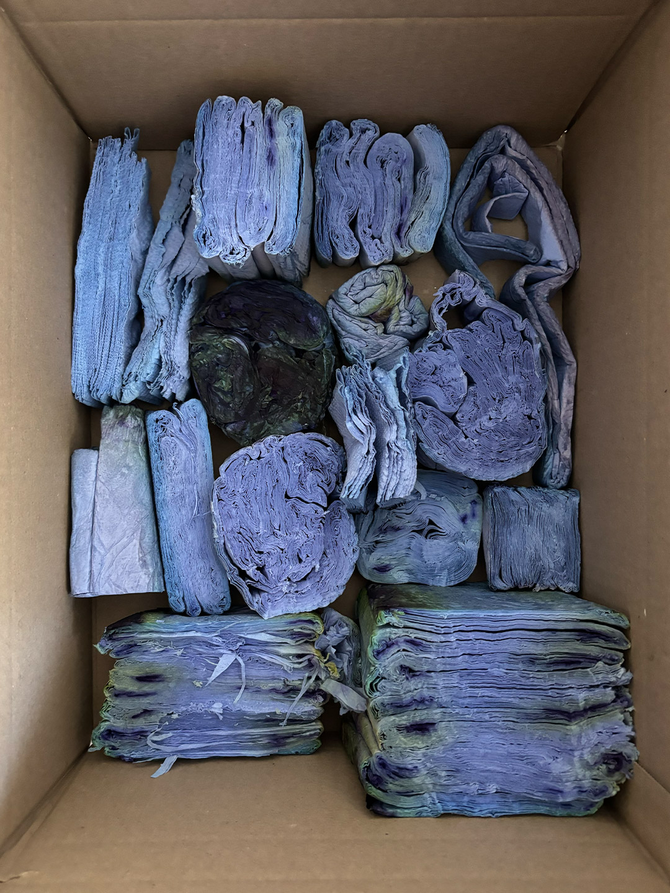
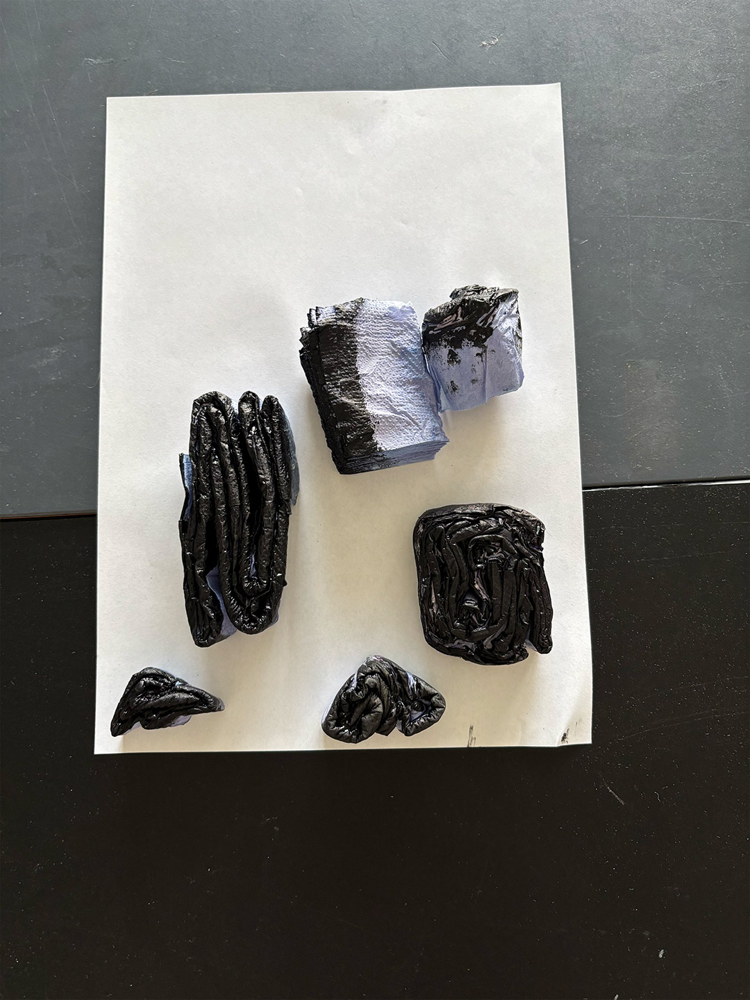
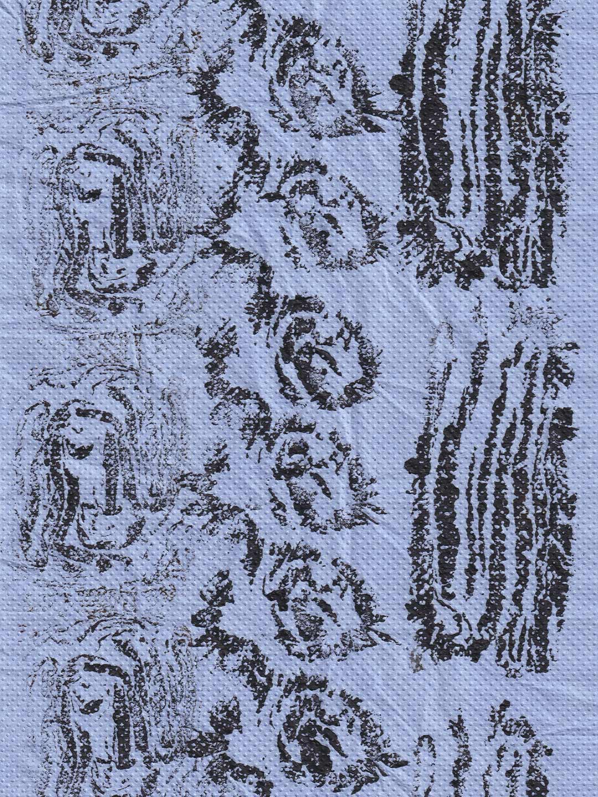
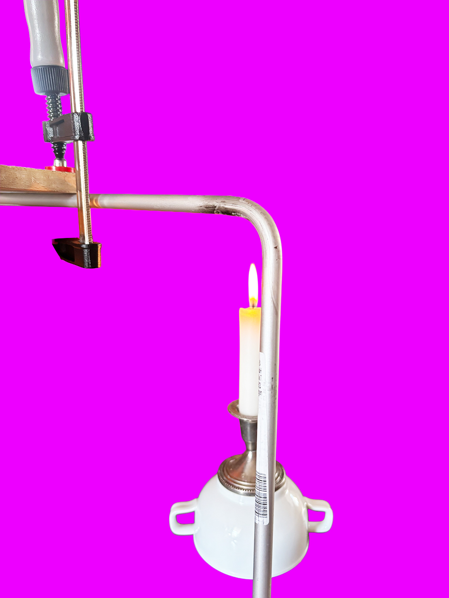
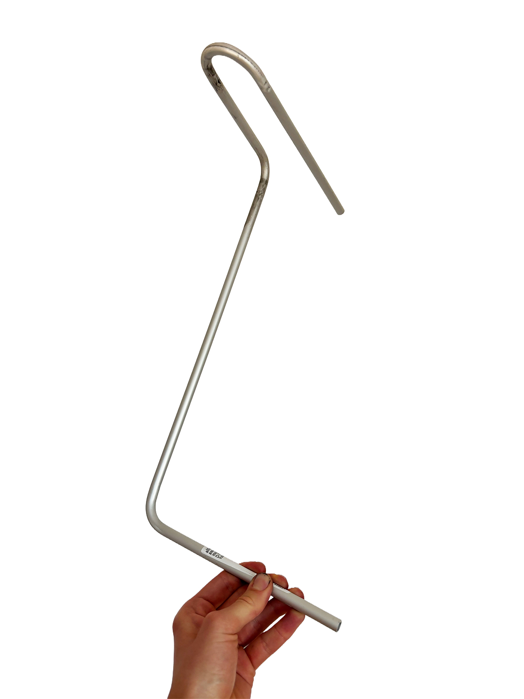
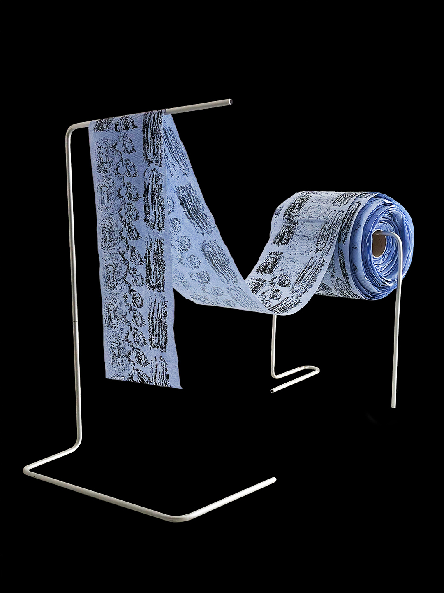

AOR
Anisotropy of Repetition
The project explores nature's fascinating ability to form complex structures. By gluing and layering individual sheets of a paper towel roll, an artificial wood structure is created. Cut and sealed, the cross-sections become the image-giving structure. This exposed, anisotropic microstructure serves as a stamp matrix, with the number of layers determining the amount of prints. Driven by unpredictable parameters of the analogue world like pressure and deterioration, the mathematical system is disrupted, making each print becoming a unique stamp.








